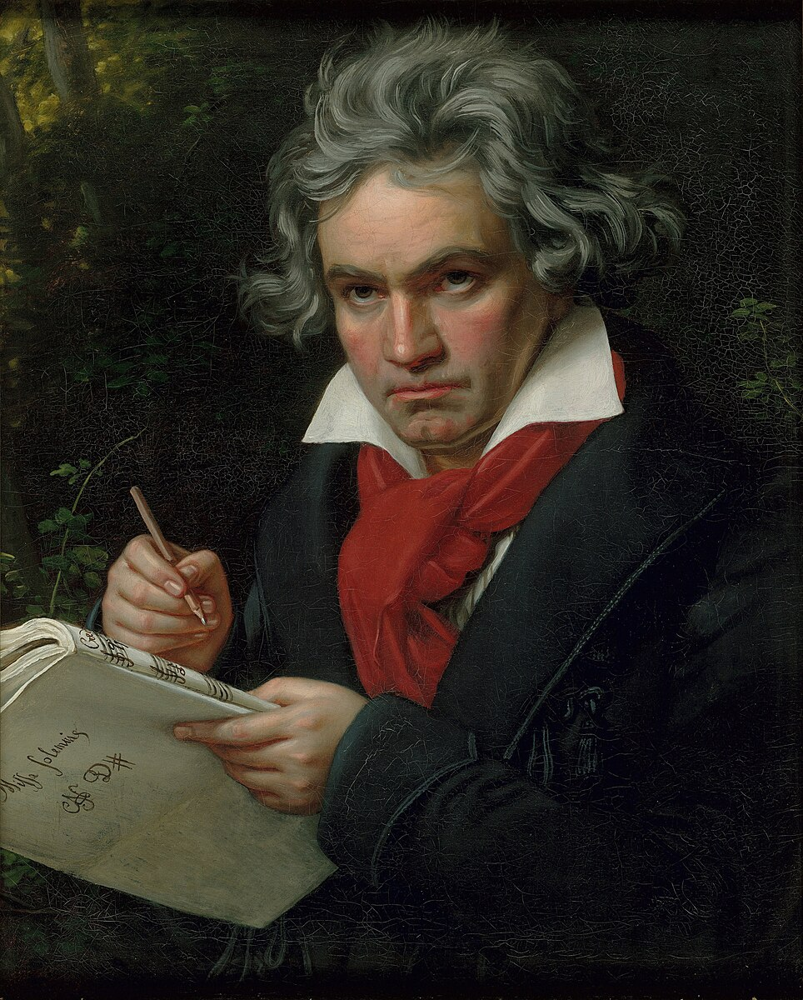
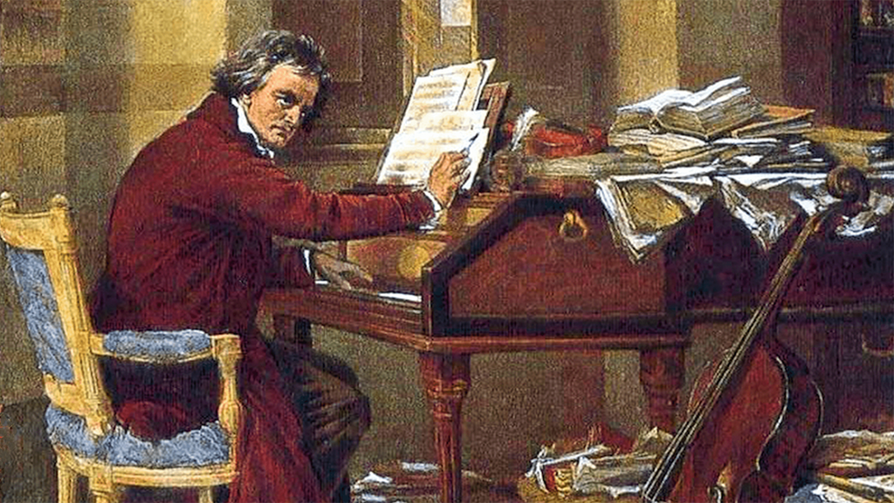
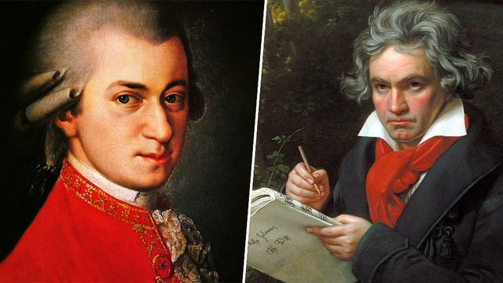

Ludwig van Beethoven, one of the most renowned composers in Western classical music, was born on December 17, 1770, in Bonn, a town in the Electorate of Cologne (now part of Germany). His childhood was marked by both talent and tragedy. Beethoven was born into a musical family. His father, Johann van Beethoven, was a court singer, and his grandfather, also named Ludwig van Beethoven, was a respected musician. Young Beethoven showed remarkable musical talent from an early age. His father recognised this talent and began teaching him music while he was very young, hoping to replicate the success of child prodigies like Mozart. However, Beethoven’s childhood was not without difficulties. Was known for his strict and often harsh demeanour, which is often considered to have inspired his rebellious nature. His mother, Maria Magdalena Keverich, played a nurturing role in his early years. However, tragedy struck when Maria died in 1787 when Beethoven was just 16 years old. Her death had a profound impact on Beethoven, leaving him emotionally scarred and possibly contributing to his brooding and introspective temperament. Despite these challenges, Beethoven’s musical education flourished. He received formal training from several notable musicians in Bonn, including Christian Gottlob Neefe, the court organist. Under Neefe’s direction, Beethoven studied piano, violin, and organ, as well as music theory and composition. Neefe recognized Beethoven’s exceptional talent and encouraged him to pursue composition seriously. Beethoven’s education was not confined to formal instruction; he also learned through experimentation and self-study. He was an avid reader and absorbed influences from a wide range of sources, including literature, philosophy, and politics. This intellectual curiosity infused his music with depth and complexity, setting him apart from his contemporaries.

In 1787, at the age of 17, Beethoven made a significant journey to Vienna, the musical capital of Europe. There, he studied under renowned composers such as Joseph Haydn and Johann Georg Albrechtsberger. Vienna was a vibrant musical centre, and Beethoven immersed himself in its rich culture, attending concerts, meeting influential figures, and honing his craft. By his early twenties, Beethoven had established himself as a talented pianist and composer. He began to attract attention with his impeccable performances and innovative compositions. His early works, such as piano sonatas and chamber music, showcased his technical skill and creative flair. One of Beethoven’s most significant achievements during his younger years was his growing reputation as a piano virtuoso and improviser. He dazzled audiences with his improvisational skills, often incorporating elements of drama and surprise into his performances. These abilities helped solidify his status as one of the leading musicians of his time. Beethoven’s early compositions, such as his Piano Concerto No.1 and his first string quartets, showcased his burgeoning talent and mastery of classical forms. In his late twenties, Beethoven’s hearing loss began to decline. There is no definitive date pinpointing the exact onset of his deafness, but he first started noticing symptoms such as ringing in his ears and difficulty hearing conversations and music. By the time Beethoven was in his early 30s, his hearing loss had become more pronounced, affecting his ability to perform and socialise. Despite seeking medical treatment, including consultations with various doctors and attempts at using hearing aids, his condition continued to worsen. Despite his hearing loss, Beethoven continued to compose and perform, relying on his inner musical imagination to create some of his most ground-breaking works. His deafness led to feelings of isolation and despair, which are reflected in the introspective nature of many of his compositions from this period. These include the Third Symphony, the ‘Eroica’, which expanded the symphonic form and introduced new levels of emotional depth; the ‘Waldstein’ and ‘Appassionata’ piano sonatas, which pushed the boundaries of piano technique and expression; and the innovative ‘Razumovsky’ string quartets, which revolutionised the genre with their innovative use of form and thematic development.

By the early 19th century, Beethoven’s deafness had become severe, profoundly impacting his ability to communicate and perform. Despite seeking medical treatment and experimenting with various hearing devices, including ear trumpets, his condition continued to deteriorate. The isolation caused by his deafness intensified Beethoven’s sense of loneliness and alienation, leading him to withdraw from social interactions and retreat into his inner world. Paradoxically, Beethoven’s later years witnessed a surge of creativity and artistic innovation. Freed from the constraints of public performance, he poured his energies into composition, producing some of his most profound and introspective works. These include his late string quartets, such as the monumental ‘Grosse Fuge’ and the ‘Late Quartets’, which pushed the boundaries of the genre with their experimental harmonies and formal structures. Additionally, Beethoven composed his final piano sonatas, including the monumental ‘Hammerklavier’ Sonata, and his 9th Symphony, with its transcendent ‘Ode to Joy’ finale. Beethoven’s later years were also marked by personal upheaval and financial struggles. He faced legal battles over custody of his nephew Karl, whom he sought to educate and mentor despite Karl’s resistance. Despite his declining health and personal difficulties, Beethoven remained fiercely dedicated to his art until the end of his life. The exact cause of his death has been the subject of much speculation and debate among historians and medical experts. Beethoven’s health had been declining for several years leading up to his death. He had suffered from a variety of ailments, including chronic abdominal pain, respiratory problems, and liver disease. Additionally, his lifelong struggle with deafness had taken a toll on his mental and emotional well-being. In the months leading up to his death, Beethoven’s health deteriorated rapidly. He experienced severe episodes of diarrhoea, fever, and swelling, which left him bedridden and weak. Despite the efforts of his physicians, including treatments such as bloodletting and medication, his condition continued to worsen. On March 24, 1827, Beethoven’s condition took a sudden turn for the worse, and he fell into a coma. He remained unconscious for several days before passing away on the morning of March 26 1817 in Vienna, Austria. The exact cause of death is uncertain, with theories ranging from cirrhosis of the liver to complications from an infectious disease or lead poisoning. Beethoven’s funeral was attended by a large gathering of mourners, including friends, colleagues, and admirers from the musical community. He was laid to rest in the Währing cemetery in Vienna, and his legacy as one of the greatest composers in history has endured for centuries.

Beethoven’s musical style and influence are profound and far-reaching, shaping the course of Western classical music and influencing generations of composers and musicians. Beethoven’s musical style evolved significantly over the course of his career, spanning the transition from the Classical to the Romantic era. His music is renowned for its emotional intensity and depth and explored a wide range of emotions in his compositions, from heroic triumph to profound introspection, often filling his works with a sense of struggle and defiance. Beethoven pushed the boundaries of harmonic language, experimenting with dissonance, chromaticism, and modulation to create new expressive possibilities. There are obvious heroic and revolutionary themes within his music, reflecting his belief in the power of human spirit and his admiration for figures such as Napoleon Bonaparte. Beethoven elevated the role of the composer to new heights, asserting their autonomy and creative authority over their works. He paved the way for the Romantic notion of the artist as a visionary and individual genius. Beethoven’s music has transcended the boundaries of time and place, becoming an integral part of the cultural heritage of humanity and his works continue to inspire and captivate audiences worldwide.